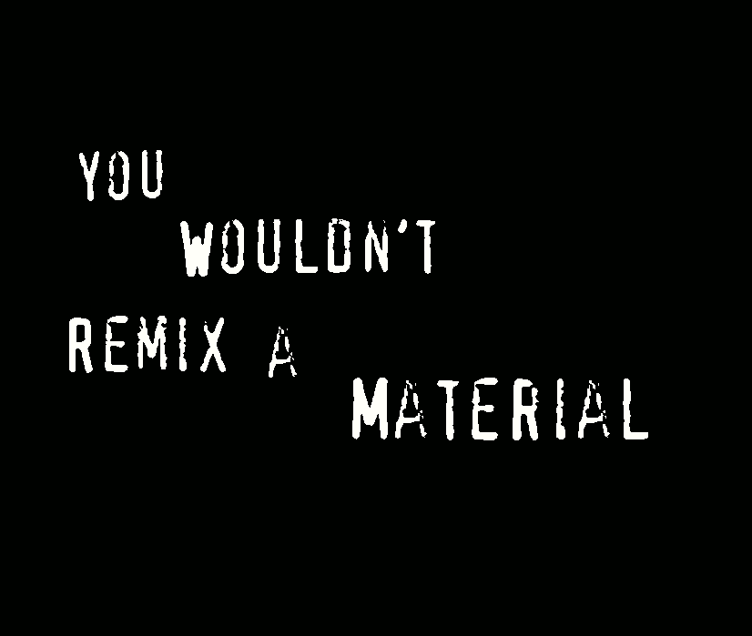

Remixing materials¶
 Death is coming - value trash, download cars, be free
TEST
I really enjoyed the first sessions of this seminar. It was interesting to playfully prototype various ways of making biomaterials out of waste, as well as exploring the fascinating world of mycelium and other microorganisms. I found myself wondering about how to make such materials a real alternative to the satus quo, while avoiding the power-centralising social structures extractive industry made ubiquitous (a question I have no clear answer to at the moment, but that opens interesting directions of research). It seems that there may be a decentralising tendency in the abundance and distribution of waste as a basis for production, as well as the potentially labour-reducing nature of grown materials. However, this emerging field risks being outflanked by patent-based business and captured markets.
As part of this seminar, we were asked to think about three materials (one we found around, one from the references we were provided, as well as an imagined, ideal material). The task, then, was the following:
1) think about the functional, technical, and emotional properties of the material 2) the story behind them and their aesthetic (with a photo for reference) 3) and about two possible applications for each.
The following section reflect my research and speculation about these (real and imagined) materials.
materials around: hair¶
story, aesthetic¶
Asked to select a waste material to explore, our group decided to go for hair. As part of our bodies, many nutriments and all their associated supply chains end up contributing to the creation of hair. Almost all hair - whether cut by ourselves, friends, or hairdressers - ends up as unrecycled trash. However it is relatively easy to collect, at least in the context of hairdressers. In general, given how much effort goes into maintaining our individual survival, when we think about waste, we should not ignore that of our own body.
properties¶
Hair is very robust in terms of tensile strength and deformability, being able to be stretched up to [1.5 times its original size] (https://www.zmescience.com/science/news-science/hair-strength/). Many people may find it a displeasing material, both in terms of haptics and a reaction of disgust just by knowing what a hair-based material is from (in this sense, it may be a ‘taboo material’ - interesting to research, given that non-functional aspects may have discouraged previous applications and research).
2 possible applications¶
People are already doing many interesting things with recycled hair. Especially intersting, for me personally, however, are those applications that take advantage of the tensile properties of hair. For example, it would be interesting to explore it’s use in textile applications, as well as for creating a light but sturdy structure, perhaps strengthening a mycelium based material (both of which are already being worked on). [thermal insulation and cleaing up oil spills are obviously extremely useful applications, but somehow I’m more excited about less extractive materials for everyday objects - perhaps something to dig into psychologically/question].
material from references: silk and silk-like materials¶
story, aesthetic¶
One of the references I found particularly interesting is the silk used in MIT Media Lab’s Silk Pavillon. They used a CNC silk dispenser to build a basic structure, and then let a large number of silkworms loose on the structure, so that they would ‘fill it out’. Though there are certainly potential ethical issues with this particular approach, the general idea of combining digitally controlled manufacturing with biological organisms seems quite promising.
Silk, while made by a biological organism (silkworms), apparently has a relatively large environmental ‘impact’. It is also somewhat distateful that animals are killed in the normal process of making silk. However, it is a durable and - to many, like me - extremely appealing fabric (due to its - well, ‘silky smooth’ - haptics) and impressive weight to durability ratio.
Fortunately, there are some alternatives for those of us who have issues with silk as it is. One that I engage in already is buying secondhand clothes made of silk (though I’m not always sure if they are actually made of 100% silk,, as their labels claim). A very interesting one that I’d like to explore more is Piña, a traditional Philipinx fiber made from pineapple leaves. Another one, which points to what I think may end up being one of the most interesting approaches (GMO microorganisms for materials), is Microsilk. Such techniques, like CRISPR may become (much more than it already is) a part of the maker/diy design arsenal.
properties¶
- sturdy
- silky
- smooth
- see previous section
2 possible applications¶
- clothing
- light bags and other textile-based products
an ideal material¶
properties¶
There is no bad weather, only bad equipment. There is no ideal material - it depends on what purpose you have in mind for the material. I will focus on an imagined material used for clothing. It is:
- very light
- extremely robust (doesn’t degrade)
- waterproof when you want it to be, porous when you want that
- ultraflexible when you want it to be, stiff when you want that
- does degrade if you want it to - quickly broken down when it needs to be disposed of
- can inflate / change thickness when needed - for example useful as an airbag replacement
- colours variable according to inclination
story, aesthetic¶
This would be a living material, which has a kind of metabolism, or some sort of relatively complex internal ecosystem (but hopefully no brain).
The changes could be enacted according to electric impulses or ‘messenger’ molecules that activate various microorganisms and enzymes.
The extreme robustness but disposability could be guaranteed by some kind of custom bacteria or mycelium that are able to break down the material (but no other on earth can) - somewhat similar to the plastic-eating organisms being explored nowadays.
It could be alive, but hopefully not conscious.
2 possible applications¶
- obviously useful in many different situations
- especially suited for an ever-changing world where no security exists, only resilience
[..pictures to follow.]